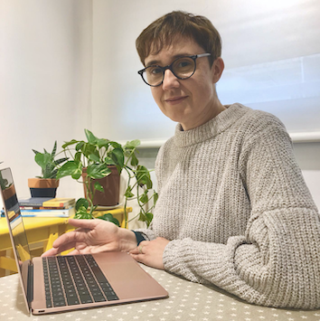

Col.legiada num 9196 | Registrada per la FEAP i la EFPA | Membre titular de l'ACPP i l'AETG |

|
|  |
Ofereixo atenció a infants de totes les edats, adolescents, adults i famílies que busquen assessorament i/o tractament psicològic:
Amb més de 25 anys d'experiència en àmbits clínics i educatius.
Atenció presencial i virtual |

|
C/Casanova 46, 4rt 1a, Barcelona.
Mb: 696453277
Email: trescoca@gmail.com Contactar:
C/Anselm Clavé 44, Molins de Rei.
Mb: 696453277
Email: trescoca@gmail.com